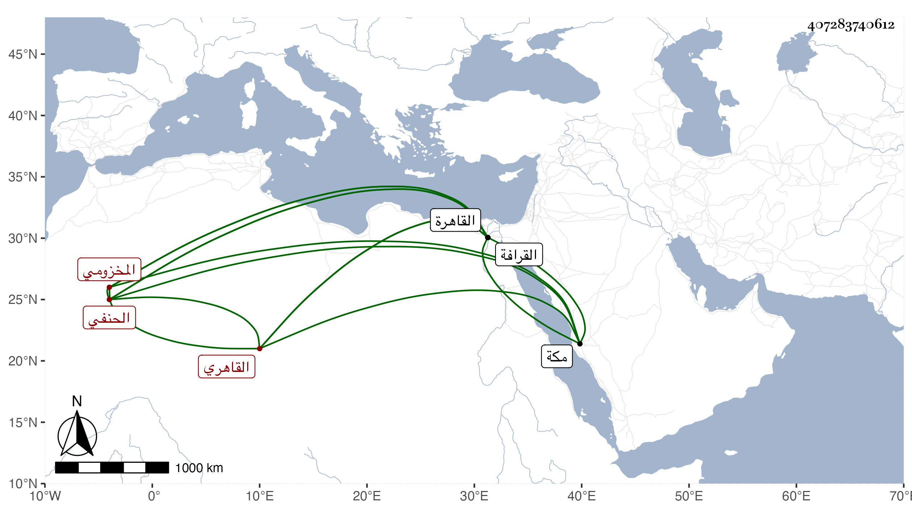

0902Sakhawi.DawLamic.ITO20230111-ara1.EIS1600.407283740612
Biography ID: 407283740612
28
علي بن محمد بن محمد بن حسين بن علي بن أيوب نور الدين بن الشمس ابن الصلاح المخزومي القاهري الحنفي الآتي أبوه ويعرف بابن البرقي . ولد في جمادى الأولى سنة سبع وتسعين وسبعمائة بالقاهرة ونشأ بها فحفظ القرآن عند ناصر الدين القاياتي عم العالم الشهير والعمدة والكنز والمنار والتلخيص وتصريف العزى وألفية النحو ، وعرض على الجلال البلقيني والعز بن جماعة وغيرهما ، وأخذ في الفقه عن السراج قاري الهداية وكذا عن سعد الدين بن الديري وعن غيرهما من قضاة مذهبه وفي العربية عن الشهاب أحمد بن منصور الأشموني ثم عن الحناوي ولم يمعن من الاشتغال ، وسمع على ابن الكويك والجمال الحنبلي وغيرهما وأخذت عنه بالخطارة بعض مسموعه وحج مرارا أولها سنة إحدى وعشرين ، وناب في القضاء عن العيني فمن بعده وبرع في الصناعة وولي تدريسا بجامع الأزهر والشهادة بالإسطبل السلطاني ولازم خدمة الجمال ناظر الخاص أزيد من ملازمة أبيه للجمال البيري فإنه اختص به وانقطع لضروراته ومهماته حتى زاد وثوق الجمال به وعول عليه وصار يصفه بالوالد فراج أمره بصحبته ولم ينفك عنه ثم عن ولديه وخازنداره يشبك حتى مات واقتفوا أثر رئيسهم في اعتماده تدبيرا وإشارة خصوصا وهو لا يمشي في غير أربهم حتى أنه قل الانتفاع به فيما لا غرض لهم فيه وسافر مكة مع الولدين ثم مع يشبك إذ سافر أمير المحمل ، كل ذلك مع المداومة على التهجد وطول القيام ومداومة الصيام وكثرة التودد بالكلام ومزيد التواضع والمداراة والعقل وبعد الغور ، وقد صحب البدر البغدادي قاضي الحنابلة وكذا السفطي لوثوقه به وأودعه مبلغا ثقيلا لكنه أخل في حفظه وأكثر من ملازمة الأميني الأقصرائي وبسفارته عنده تعين رفيقه الأسيوطي لقضاء الشافعية طمعا في استقراره هو أيضا في قضاء الحنفية فما تم له وحمد ذلك . وقد تعلل مدة ومات في ليلة الأحد مستهل جمادى الآخرة سنة خمس وسبعين ، وصلي عليه من الغد بجامع المارداني في مشهد حافل ودفن بالقرافة رحمه الله وإيانا وعفا عنا .
